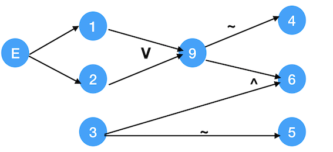
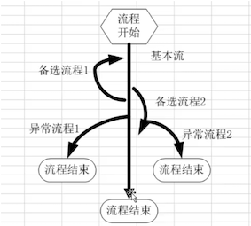

Day 3 学习软件测试的必备知识——（测试基本流程和测试用例的设计）
Day 3 软件测试核心知识——（基本流程和测试用例及测试用例设计方法）
[TOC]
一、软件测试的基本流程

我们上一篇文章介绍了公 …
Day 3 软件测试核心知识——（基本流程和测试用例及测试用例设计方法）
[TOC]
一、软件测试的基本流程
我们上一篇文章介绍了公司的开发模型和测试模型，那是你在公司的工作的模式，这里
的软件测试的基本流程是讲你面对测试任务时的工作模式或者说是方法论。
就是告诉你如何面对测试任务并完美的完成该任务。
（PS：我希望每位同学都能形成自己解决问题的方法论，那才是测试经验的具体化和个人最宝贵的价值体现）
需求分析阶段：
- 阅读需求、理解需求，分析需求点，参与需求评审会议。
测试计划阶段：
- 主要任务就是编写测试计划，参考软件需求规格说明书，项目总体计划，
- 内容包括测试范围，进度安排，人力物力分配，整体测试策略的制定,风险评估与规避措施，
- 参与测试计划的评审工作。
测试设计阶段：
- 编写测试用例，参考需求分析、概要设计、详细设计，不明确的与开发、产品经理沟通。
- 用例完成后进行评审
测试执行阶段：
- 搭建环境准备数据，执行冒烟测试（预测试）然后进入正式测试（系统测试、回归测试、交叉测试、自由测试），遇到问题提交bug到缺陷管理平台，并对bug进行跟踪，直到被测试软件达到测试需求要求，没重大bug，测试结束。
评估阶段：
- 出测试报告，对整个测试的过程和版本质量做一个详细的评估。
二、什么是测试用例？
1. 测试用例定义
测试用例又叫做test case，是为某个特殊目标而编制的一组测试输入、执行条件以及预期结果,以便测试某个程序路径或核实是否满足某个特定需求。
2. 编写测试用例的原因
2.1 理清思路，避免遗漏
如果测试的项目大而复杂，我们可以把项目功能细分，根据每一个功能通过编写用例的方式来整理我们测试系统的思路，避免遗漏掉要测试的功能点。
2.2 跟踪测试进展
通过编写测试用例，执行测试用例，我们可以很清楚的知道我们的测试进度。
2.3 历史参考
在我们所做的项目中，也许会有很多功能是相同或相近的，我们对这类功能设计了测试用例，便于以后我们遇到类似功能的时候可以做参考依据。
2.4 规范作用
我们测试一个系统不是一个人测一遍就算测完的，需要多人反复的进行测试，那么我们就需要测试用例来规范和指导我们的测试行为。
3. 测试用例的要素
3.1. 测试用例八大要素
| 测试用例编号 | 测试项目(测试模块) | 预置(前提)条件 | 测试输入 | 预期输出 | 操作步骤 | 测试用例标题 | 级别 |
|---|---|---|---|---|---|---|---|
| ST-子项名-01 | 手机登录 | 手机正常使用 | 手机号 | 正常登录 | 输入手机号并确认 | 测试能否手机登录成功 | 重要 |
1). 测试用例编号
编号由字符和数字组合成的字符串,用例编号具有唯一性、容易识别, 如下表
测试项目
测试的项目属于哪个项目或者被测试的需求、被测的模块、被测的单元等等
3). 预置条件
执行当前测试用例需要的前提条件,如果前提条件不满足,则后面的测试步骤不能进行或者得不到预期结果
4). 测试输入
测试用例执行过程中需要加工的外部信息.根据测试用例的具体条件有手工输入、数据库等
5). 预期输出
测试用例的预期输出结果,包括返回值内容、界面响应结果等.
6). 操作步骤
执行当前测试用例需要经过的操作步骤，需要明确的给出一个步骤的描述，测试用例执行人员可以根据该步骤完成测试用例执行
7). 测试用例标题
对测试用例的简单描述。用概括的语言描述该测试用例的测试点。每个测试用例的标题不能够重复，因为每个测试用例的测试点事不一样的。
8). 级别
对于测试用例的重要程度的区分.包含如下几种:
- 高级别
保证系统基本功能、核心业务、重要特性、实际使用频率比较高的用例
- 中级别
重要程度介于高和低之间的测试用例
- 低级别
实际使用的频率不高，对系统业务功能影响不大的模块或功能的测试用例
3. 2. 其他要素
- 用例的设计者:能准确找到测试用例的设计人员,对用例修改时能方便找到人员
- 用例设计日期: 方便检查用例的设计进度
- 对应的开发人员: 出现bug后能及时找到相应的人员进行修复
- 测试结果: 执行用例最后执行的结果, 包括:pass、fail、block
- 测试类型: 功能、性能、压力等等
三、测试用例设计方法
掌握常用测试用例设计方法,再结合测试用例的要素能给快速的实现测试用例的设计和编写.但是由于软件系统大小的不同我们不可能把所有的单个或组合的情况都进行测试,所以我们测试时应该根据不同的场景设计不同的测试用例,尽可能的覆盖到全部需要测试的情况.
常用的测试用例设计方法有: 等价类划分话、边界值分析法、判定表法、正交验证法、错误推测法、场景法、因果图法、 功能图法。
记忆方法：等边工（功）场因判正错
等价类划分法
1. 等价类划分的介绍和概念定义
- 划分
指互不相交的一组子集，这些子集的并是整个集合。
对测试的意义：完备性和无冗余性。
- 等价类
等价类是指某个输入域的子集合。在该子集合中，各个输入数据对于揭露程序中的错误都是等效的，具有等价特性。
- 等价类合理地假设
测试某等价类的代表值就等于对这一类其它值的测试。
- 等价类划分
在测试中最完美的测试是使用穷举测试,把所有的数据都测一遍.但是实际工作中不能采用,因为效率太低了.
理想的测试时:使用最少的测试数据,达到最好的测试质量.
等价类划分法的测试思想是:
从大量数据里划分范围（每个范围内的数据测试效果是等价的所以每个范围是一个等价类），然后从每个范围中挑选代表数据，这些代表数据能反应这个范围内数据的测试结果。
官方定义:
等价类测试方法是把所有可能的输入数据，即程序的输入域划分成若干部分，然后从每一部分中选取少数有代表性的数据作为测试用例。使用等价类划分方法设计测试用例要经历划分等价类（列出等价类表）和选取测试用例两步，它将不能穷举的测试过程进行合理分类，从而保证设计出来的测试用例具有完整性和代表性。
1.1. 类型划分
等价类的类型划分分为:有效等价类和无效等价类.
(1). 有效等价类
有效等价类是指对对于程序的规格说明来说是合理的、有意义的输入数据构成的集合.利用有效等价类可检验程序是否实现了规格说明中所规定的功能和性能.
(2). 无效等价类
无效等价类指对程序的规格说明是不合理的、无意义的输入数据所构成的集合。对于具体的问题，无效等价类至少应有一个，也可能有多个。利用无效等价类可校验程序对于无效数据的处理能力,检测程序的健壮性、容错能力
注意:
设计测试用例时,要同时考虑这两种等价类。因为软件不仅要能接收合理的数据,也要能经受意外的考验，这样的测试才能确保软件具有更高的可靠性。
2. 设计测试用例
步骤:
- 确定需求
- 确定有效等价类和无效等价类
- 对每条等价类设计测试用例
3. 案例
要求:使用等价类划分法测试QQ账号的合法符合规范
| 明确需求 | 输入6-10位的自然数 | |
|---|---|---|
| 有效等价类 | 有效等价类 | 自然数个数大于6小于10个 |
| 无效等价类 | 无效等价类 | 小于6个、大于10个、中文、空格、英文、特殊字符、小数 |
| 设计测试用例 | 有效等价类测试用例 | 无效等价类测试用例 |
测试用例
| 用例编号 | 等价类划分 | 输入 | 预期结果 | 测试结果 | 重要级别 |
|---|---|---|---|---|---|
| UT-QQ账号-01 | 有效等价类 | 12345678 | 正确 | 正确 | 高级 |
| UT-QQ账号-02 | 无效等价爱类 | 12 | 错误 | error | 高级 |
| …. | ….. | …. | …. | …. | …. |
边界值测试法
1. 介绍
边界值分析法就是对输入或输出边界值进行测试的,也是一种黑盒测试.
边界值分析法通常作为等价类划分法的补充,其测试用例来自等价类的边界;长期的经验得知,大量的错误是发现在输入或输出范围的边界上，而不是发生再输入输出范围的内部，因此针对各种边界情况设计测试用例，可以查出更多错误.
和等价类划分法的区别:
- 是等价类划分法的补充
- 等价类划分法可以挑选等价范围内任意一个数据作为代表,边界值分析法要求每个边界值都要作为测试条件
- 边界值分析法不仅考虑输入条件,同样考虑输出产生的测试情况
常见的边界值:
- 边界点(上点):输入范围的边界点
- 离点: 离边界点最近的点
- 内点: 输入范围内的任意一个点
对于边界值的说明:
边界值数据本质上属于等价类的范畴,测试时确实是一种冗余（重复），但是为了更好的测试质量（边界值特别容易出bug），边界值必须要单独测,适当必要的冗余是可以接受的.
举例: 0-100内的整数
| 上点 | 0, 100 |
|---|---|
| 离点 | 1, 99; -1,101; 1,101; 0, 99; |
| 内点 | 34 |
2. 使用边界值设计测试用用例
2.1 步骤:
- 明确需求
- 确定有效和无效等价类
- 明确输入条件中的边界值
- 编写测试用例
注意: 边界值法应用时，如果测试时间紧张，应该优先测试最大值和最小值
2.2 案例
要求:测试qq账号是否符合规范
- 需求: qq号是6-10位的整数
- 确定边界值
| 上点 | 6个, 10个 |
|---|---|
| 离点 | 5个, 9个, 7个,11个 |
| 内点 | 8个 |
- 编写测试用例
| 用例编号 | 等价类划分 | 输入 | 预期结果 | 实际结果 |
|---|---|---|---|---|
| UT-QQ是否符合规范-01 | 有效等价类 | 6个 | 正确 | |
| UT-QQ是否符合规范-02 | 有效等价类 | 10个 | 正确 | |
| UT-QQ是否符合规范-03 | 无效等价类 | 5个 | 错误 | |
| UT-QQ是否符合规范-04 | 有效等价类 | 7个 | 正确 | |
| UT-QQ是否符合规范-05 | 无效等价类 | 11个 | 错误 | |
| UT-QQ是否符合规范-06 | 有效等价类 | 9个 | 正确 | |
| UT-QQ是否符合规范-07 | 有效等价类 | 8个 | 正确 | |
| UT-QQ是否符合规范-08 | 无效等价类 | 特殊符号,例如: #,¥ *、空格等 | 错误 | |
| UT-QQ是否符合规范-09 | 无效等价类 | 数字+特殊符号 | 错误 |
判定表法
1. 使用场景
适合于有多个输入和对个输出,输入和输出之间有相互的组合关系, 输入输出之间有相互的制约和依赖关系
2. 定义
判定表也称决策表, 是分析和表达多逻辑条件下执行不同操作的工具.
它能够将复杂的问题按照各种可能的情况全部列举出来，简明并避免遗漏。因此,利用判定表能够设计出完整的测试用例集合。在一些数据处理问题当中，某些操作的实施依赖于多个逻辑条件的组合，即：针对不同逻辑条件的组合值，分别执行不同的操作。判定表适合于处理这类问题。
3. 组成
判定表是由条件桩、动作桩、条件项、动作项四部分组成,如下图.
| 条件桩 | 条件项 |
|---|---|
| 动作桩 | 动作项 |
1） 条件桩（Condition Stub）：列出了问题得所有条件。通常认为列出的条件的次序无关紧要。
2） 动作桩（Action Stub）：列出了问题规定可能采取的操作。这些操作的排列顺序没有约束。
3） 条件项（Condition Entry）：列出针对它左列条件的取值。在所有可能情况下的真假值。
4） 动作项（Action Entry）：列出在条件项的各种取值情况下应该采取的动作。
4.规则及规则合并
4.1 规则
任何一个条件组合的特定取值及其相应要执行的操作称为规则。
在判定表中贯穿条件项和动作项的一列就是一条规则。显然判定表中列出多少组条件取值，也就有多少条规则，既条件项和动作项有多少列。
4.2 化简
规则合并有两条或多条规则具有相同动作,并且其条件项之间存在着极为相似的关系。
5. 测试案例设计
步骤:
- 明确规则个数
- 列出所有条件桩和动作桩
- 填入条件项
- 填入动作项,等到初始判定表
- 简化,合并相似规则
6. 案例
1. 案例1
问题要求:对于功率大于50马力的机器、维修记录不全或运行10年以上的机器,应优先维修.
测试案例设计思想
1.1 . 明确规则个数
这里有三个条件:大于50马力、维修记录不全、运行10年以上, 每个条件有2种取值,所以有八种规则.
1.2. 列出条件桩和动作桩
| 条件桩 | 功率大于50马力? |
|---|---|
| 维修记录不全? | |
| 运行超过10年? | |
| 动作桩 | 优先处理 |
1.3. 填入条件项
1.4. 填入动作项等到初始判定表
| 条件桩 | 条件项 | 1 | 2 | 3 | 4 | 5 | 6 | 7 | 8 |
|---|---|---|---|---|---|---|---|---|---|
| 功率大于50马力? | Y | Y | Y | Y | N | N | N | N | |
| 维修记录不全? | Y | Y | N | N | Y | Y | N | N | |
| 运行10年以上? | Y | N | Y | N | Y | N | Y | N | |
| 动作桩 | 优先处理? | X | X | X | X | X | |||
| 其他处理 | X | X | X |
1.5 . 简化判定表
通过初始的判定表我们发现:
- 在三个条件中有2个不满足时,剩下的一个完全没有参考价值,可以进行简化.
只有功率大于50马力、维修记录全的、运行十年以上的才优先处理;
其他处理的情况是:满足动力大于50马力、维修功能完全、没有运行10年以上中只要满足两项
- 简化后为
| 条件桩 | 条件项 | 1 | 2 | 3 | 4 | 5 |
|---|---|---|---|---|---|---|
| 功率大于50马力? | Y | Y | N | N | Y | |
| 维修记录不全? | Y | N | - | - | N | |
| 运行10年以上? | - | Y | Y | N | N | |
| 动作桩 | 优先处理? | X | X | X | ||
| 其他处理 | X | X |
注意: “-”表示取值与否不影响触发的动作.即,不影响规则
2. 案例2.
公交一卡通自动充值系统要求:
- 系统只接收50或100元纸币，一次只能使用一张纸币，一次充值金额只能为50元或100元。
- 若输入50元纸币，并选择充值50元，完成充值后退卡，提示充值成功；
- 若输入50元纸币，并选择充值100元，提示错误，并退回50元；
- 若输入100元纸币，并选择充值50元，完成充值后退卡，提示充值成功，找零50元；
- 若输入100元纸币，并选择充值100元，完成充值后退卡，提示充值成功；
- 若输入纸币后在规定时间内不选择充值按钮，找零，并提示错误；
- 若选择充值按钮后不输入货币,提示错误
测试案例实现如下
2.1 明确规则个数
| 规则个数(条件桩) | 输入50元 |
|---|---|
| 输入100元 | |
| 充值50元 | |
| 充值100元 |
2.2. 列出条件桩和动作桩
| 动作桩 | 提示充值成功 |
|---|---|
| 充值成功并退卡 | |
| 退卡 | |
| 找零 |
2.3. 列入条件项
2.4. 填入动作项,等待初始的判定表
| 输入条件 | 1 | 2 | 3 | 4 | 5 | 6 | 7 | 8 | |
|---|---|---|---|---|---|---|---|---|---|
| 输入50元 | Y | Y | X | ||||||
| 输入100元 | Y | Y | X | ||||||
| 充值50元 | Y | Y | X | ||||||
| 充值100元 | Y | Y | X | ||||||
| 动作桩 | 充值成功并退卡 | X | X | X | |||||
| 提示充值成功 | X | X | X | ||||||
| 找零 | X | X | X | X | |||||
| 提示错误 | X | X | X | X | X |
2.5 简化
这个案例中每个条件都是独立的,没有可以简化的
2.6.测试用例设计
上面的表中每一条就是一个测试用例.

因果图法
1. 概述
因果图法是一种利用图解法分析输入条件、输出结果的各种组合情况,从而设计测试用例的方法.
因果图法适用于有多个输入和多个输出，而且输入和输入之间有相互的组合关系，输入和输出之间有相互的制约和依赖关系.
使用场景和判定表法是一样的.
在界面中有多个控件，控件之间有组合或限制关系，不同的输入组合会对应不同的输出结果，如果想弄清楚不同的输入组合到底对应哪些输出结果，可以使用因果图/判定表法。(因果图/判定表法比较适合测试组合数量较少的情况，一般少于20种)
和判定表法的不同:
- 因果图，只是一个用图形表示，表示因果方式不同而已
关联:
- 判定表和因果图是等价的，判定表是因果图的简化版。
2.核心
2.1 因果图
原因(因): 输入条件
结果(果): 输出结果
因果图: 就是通过画图的方式来表示输入条件（因）和输出结果（果）之间的关系。
2.2 因果图中的图形符号
含义: 原因出现结果出现,原型不出现,结果不出现. 例如:若c=10,则d=0.
(2). 非 (~)
含义: 若原因出现,则结果不出现;原因不出现则结果出现.例如: 搜索联系人,若有就不提示错误.
(3). 或 (v)
含义: 若几个原因中有一个出现,这结果出现;若都不出现,结果不出现.
(4). 与(^)
含义: 若几个原因都出现结果才出现,否则,结果不出现.
2.3 约束
输入状态相互之间还可能存在某些互相依赖的关系,称为约束. 输出状态之间也存在某些约束.在因果图中使用特定符号表示这些约.
束.
(1). 输入条件约束
- E(exclude) 约束: a和b中至多有一个为1.
- I(include) 包含: a、b和c中至少有一个必须是1.
- R(required) 要求: a是1时，b必须是1.
- O(only) 唯一: a和b必须有一个，且仅有1个为1.
(2). 输出条件约束
- M(mandatory) 强制: 若结果a是1,结果b强制为0.
3. 设计测试用例
步骤
- 了解需求,找出所有的输入条件(因)
- 找出所有的输出结果(果)
- 画因果图、填判定表
- 判定表中每个规则就是一条测试用例
4.案例
问题描述: 如想对文件进行修改,输入的第一列字符必须是a或b,第二列字符必须是一个数字,如果第一列字符不正确则给出信息L,如果第二个字符不正确,则给出字符M
4.1 了解需求,找出输入条件
1— — 第一列字符是a
2 — — 第一列值符为b、
3 — — 第二列必须是数字
4.2 找出所有的输出结果
结果:
4— 信给出息l
5— 信息m
6— 修改文件
4.3 画因果图、填判定表
通过分析得出,原因1和原因2不可能同时出现,添加约束E. 设置9为中间点.
因果图如下:

判定表法
| 条件(原因) | 1 | 2 | 3 | 4 | 5 | 6 | 7 | 8 | |
|---|---|---|---|---|---|---|---|---|---|
| 1 | Y | Y | N | N | N | N | Y | Y | |
| 2 | N | N | Y | Y | N | N | Y | Y | |
| 3 | Y | N | Y | N | Y | N | Y | N | |
| 中间值 | 9 | Y | Y | Y | Y | N | N | ||
| 动作(结果) | 4 | Y | Y | ||||||
| 5 | Y | Y | |||||||
| 6 | Y | Y | Y |
注意: 第7列和第8列不可能出现,所以排除这两种情况.
4.4 根据判定表设计测试用例
正交法

通过分析我们发现,对于图中的程序而言,我们要设计81条测试用例,那么有没有一种方法能够使用最小的测试过程集合获得最大的测试覆盖率呢?
1. 概述
1.1 定义
正交法,也叫正交实验法或者正交排列法, 就是使用最小的测试过程集合获得最大的测试覆盖率。
“正交实验”是研究多因素、多水平的一种实验方法,它利用正交表来对实验进行设计,通过少数实验代替全面的实验.
在一项实验中,把影响试验结果的量称为试验因素(因子)，简称因素。因素可以理解为试验过程中的自变量，试验结果可以看成因素的函数。在试验过程中，每一个因素可以处于不同的状态或状况，把因素所处的状态或状况，称为因素的水平，简称水平。
1992年AT&T公司,针对某一个软件做了一个回归测试：
在18个周（4个半月）的时间范围内测试1500条测试用例。后来开发时间推迟了，测试时间被压缩了。测试经理想了一个办法，两个人在8个周（2个月）测试1000条测试用例。但是测试经理不能保证该软件就是完全没有问题的。后来他决定用正交表去重新设计一下测试用例，422条测试用例，42个bug。测试完毕后，软件上线了。在上线的两年时间内。凡事被测试到的领域，都没有发现任何问题。后来呢，他从头到尾有总结了一番：有可能只会测试出32条bug。
前后对比：
- 测试用例的条数少了
- 测试出来bug的数量多了
1.2 正交表的构成
˙正交表时一种特制的表, 一般记为$$Ln(m^k)$$
- n是表的行数,也就是需要测试组合的次数
- k是表的行数, 表示控件个数(因素的个数,或因子的个数)
- m是每个控件包含的取值个数(各因素的水平数,即各因素的状态数)
例如: $$L9(3^4)$$ 正交表如下

2. 使用正交法设计测试用例
2.1 步骤
- 根据需求把空间即其取值列举出来
- 根据空间和空间的取值个数,选择一个合适的正交表
- 根据控件的个数,选择正交表的次幂,也就是正交表中包含的最大值, 例如,4个控件,选择4次幂
- 根据控件取值个数,选择正交表的底,也就是正交表包含的最大值, 例如, 每个控件有3个取值,底是3
- 把控件及其取值映射到正交表中
- 把控件名字分别映射到正交表的列名位置
- 把正交表中每一列的数字分别用对应的控件取值替代
- 根据正交表,编写测试用例
2.2 案例
实现“字符属性设置”的测试用例编写
(1). 列举因子表
| 字体 | 字符样式 | 字体颜色 | 字号 |
|---|---|---|---|
| 仿宋 | 粗体 | 红色 | 20号 |
| 楷体 | 斜体 | 绿色 | 30号 |
| 华文彩云 | 下划线 | 蓝色 | 40号 |
(2) 确定使用的正交表
| 确定采用的正交表 |
|---|
| $$L9(3^4)$$ |
(3). 把控件及其取值映射到正交表中

(4). 编写测试用例
上图正交表每一行都是一条测试用例,, 此处仅列出2条
| 用例编号 | 输入 | 预期结果 | 实际结果 | 是否是bug |
|---|---|---|---|---|
| UT-设置字符子项测-01 | 字体:仿宋; 字符样式: 粗体; 颜色:红色; 字号:20 | 仿宋、 粗体、 红色、20号 | ||
| UT-设置字符子项测-02 | 字体:仿宋; 字符样式: 粗体; 颜色:红色; 字号:30 | 仿宋、 粗体、 红色、20号 |
3. 小结
3.1 使用场景
- 需求中条件的组合量比较大的时候
- 需求两个两个相互组合的时候
3.2 局限性
正交表的个数有限,一般要求每个控件的取值相等,但是这在实际中很难应用,所以在实际使用时要进行取舍
- 对于控件个数,如果没有,就选择一个接近的
- 对于控制的取值,应该少数服从多数, 有更多空间的取值一样
场景法
1. 概述
1.1 为什么使用场景法设计测试用例
大多数业务软件由后台管理（比如：用户管理、角色管理、权限管理等等各种管理）和工作流等几个部分组成。终端用户，期望软件能够实现业务需求，而不是简单的功能的组合。对于单点功能利用等价类、边界值、判定表用例设计方法能够解决大部分问题。涉及业务流程的软件系统，采用场景法比较合适。
总之, 对于多个功能组合测试的场景适合使用场景法, 所以场景测试,也是业务场景组合测试.
1.2 概念

场景业务流通常分为: 基本流、备选流、异常流程
(1) 基本流
基本流表示通过业务流程时输入都正确，能达到目标的流程
(2) 备选流
备选流表示通过业务流程时输入错误（或者操作错误）导致流程存在反复，但是经过纠正后仍能达到能达到目标的流程.（插卡-->输入错误密码--》输入正确密码--》输入金额--》取款--》取卡）
(3) 异常流
异常流表示通过业务流程时输入错误（或者操作错误）产生异常终止流程
2. 使用场景法设计测试用例
1. 步骤
- 分析需求,确定基本流程、备选流程、异常流程
- 绘制流程图,确定流程路径, 根据流程图生成不同的场景
- 每一个场景就是一条测试用例
2. 案例
2.1 需求描述
用户网上购买商品, 整个订购过程为：用户登录到网站后，进行书籍的选择，当选好自己心仪的书籍后进行订购，这时把所需图书放进购物车，等进行结帐的时候，用户需要登录自己注册的帐号，登录成功后，进行结帐并生成订单，整个购物过程结束。
2.2 测试用例实现
(1). 分蓄需求,确定业务流程(基本流程、备选流程、异常流程)
| 基本流程 | 用户登录到网站，书籍的选择，进行订购，把所需图书放进购物车，等进行结帐的时候，登录自己的帐号，登录成功后，生成订单. |
|---|---|
| 备选流程1 | 账号不存在 |
| 备选流程2 | 账号错误 |
| 备选流程3 | 密码错误 |
| 备选流程4 | 没有选购书籍 |
| 备选流程5 | 退出系统 |
(2). 绘制流程图,确定流程路径, 根据流程图生成不同的场景
| 场景1-购物成功 | 基本流程 | |
|---|---|---|
| 场景2-账号不存在 | 基本流程 | 备选流程1 |
| 场景3-账号错误 | 基本流程 | 备选流程2 |
| 场景4-密码错误 | 基本流程 | 备选流程3 |
| 场景5-没有选购书籍 | 基本流程 | 备选流程4 |
(3). 编写测试用例, 对于每一个场景都需要确定测试用例。
| 测试用例编号 | 输入条件 | 账号 | 密码 | 是否选购书籍 | 预期结果 |
|---|---|---|---|---|---|
| ST-系统测试子项-1 | 场景1 | 张三 | admin@123 | Y | 购物成功 |
| ST-系统测试子项-2 | 场景2 | 李四 | N | N | 提示账号不存在 |
| ST-系统测试子项-3 | 场景3 | 赵六 | admin | N | 提示账号错误, 返回基本流程 |
| ST-系统测试子项-4 | 场景4 | 张三 | Admin123&…… | N | 提示密码错误,返回基本流程 |
| ST-系统测试子项-5 | 场景5 | 张三 | admin@123 | N | 提示没有选购书籍, 返回基本流程 |
3. 小结
场景流程比较适合于涉及到业务需求的场景, 能够多个功能联合进行测试,不是单个功能进行测试.
功能图法
1.1 简介
一个程序的功能说明通常由动态说明和静态说明组成.
动态说明描述了输入数据的次序或转移的次序.静态说明描述了输入条件与输出条件之间的对应关系.
对于较复杂的程序,由于存在大量的组合情况,因此,仅用静态说明组成的规格说明对于测试来说往往是不够的.必须用动态说明来补充功能说明.功能图方法是用功能图FD形式化地表示程序的功能说明,并机械地生成功能图的测试用例.
功能图模型由状态迁移图和逻辑功能模型构成.
- 状态迁移图用于表示输入数据序列以及相应的输出数据.在状态迁移图中,由输入数据和当前状态决定输出数据和后续状态.
- 逻辑功能模型用于表示在状态中输入条件和输出条件之间的对应关系.逻辑功能模型只适合于描述静态说明,输出数据仅由输入数据决定.测试用例则是由测试中经过的一系列状态和在每个状态中必须依靠输入/输出数据满足的一对条件组成.功能图方法其实是是一种黑盒白盒混合用例设计方法。
功能图方法中,要用到逻辑覆盖和路径测试的概念和方法,其属白盒测试方法中 的内容.
逻辑覆盖是以程序内部的逻辑结构为基础的测试用例设计方法.该方法要求测试人员对程序的逻辑结构有清楚的了解.
由于覆盖测试的目标不同,逻辑覆盖可分为:
- 语句覆盖
- 判定覆盖
- 判定-条件覆盖
- 条件组合覆盖
- 路径覆盖
1.2 组成
功能图由状态迁移图和布尔函数组成.状态迁移图用状态和迁移来描述.一个状态指出数据输入的位置（或时间）,而迁移则指明状态的改变.同时要依靠判定表或因果图表示的逻辑功能.
例如下面的ATM功能图法测试

1.3 设计测试用例
(1). 生成测试用例的规则
从功能图生成测试用例,得到的测试用例数是可接受的. 问题的关键的是如何从状态迁移图中选取测试用例. 若用节点代替状态,用弧线代替迁移,则状态迁移图就可转化成一个程序的控制流程图形式.问题就转化为程序的路径测试问题（如白盒测试）问题了.
为了把状态迁移（测试路径）的测试用例与逻辑模型（局部测试用例）的测试用例组合起来,从功能图生成实用的测试用例,须定义下面的规则.
在一个结构化的状态迁移（SST）中,定义三种形式的循环:顺序,选择和重复.但分辨一个状态迁移中的所有循环是有困难的.
(2). 步骤
- 生成局部测试用例: 在每个状态中,从因果图生成局部测试用例.局部测试用例由输入数据与对应的输出数据或状态构成。
- 测试路径生成:利用上面的规则（三种）生成从初始状态到最后状态的测试路径。
- 测试用例合成:合成测试路径与功能图中每个状态中的局部测试用例.结果是初始状态到最后状态的一个状态序列,以及每个状态中输入数据与对应输出数据的组合。
错误推测法
1定义
错误推测法是: 基于经验和直觉推测程序中所有可能存在的各种错误，从而有针对性的设计测试用例的方法。
2基本思想
根据经验,列举出程序中所有可能有的错误和容易发生错误的特殊情况,根据他们选择测试用例。
3 使用场景
适用于项目时间比较短促,任务比较繁重的情况下
四、总结：
软件测试基本流程：（分为5个阶段）
需求分析阶段、测试计划阶段、测试设计阶段、测试执行阶段、评估阶段
测试用例：（测试用例八大要素）
测试用例八大要素
| 测试用例编号 | 测试项目(测试模块) | 预置(前提)条件 | 测试输入 | 预期输出 | 操作步骤 | 测试用例标题 | 级别 |
|---|---|---|---|---|---|---|---|
| ST-子项名-01 | 手机登录 | 手机正常使用 | 手机号 | 正常登录 | 输入手机号并确认 | 测试能否手机登录成功 | 重要 |
一般大型公司都有自己测试用例模板
（但是这个也得记一下，万一让自己出模板呢）
测试用例设计方法：
等边工场因判正错
这章也是纯纯干货哦，面试也会问到的~
举例面试题（自测一下）:
1、你公司的测试流程是什么样的？
2、测试用例包含哪些内容？
3、测试用例设计方法你都会哪些？
4、详细讲一下正交法，你工作中怎么用的？
...